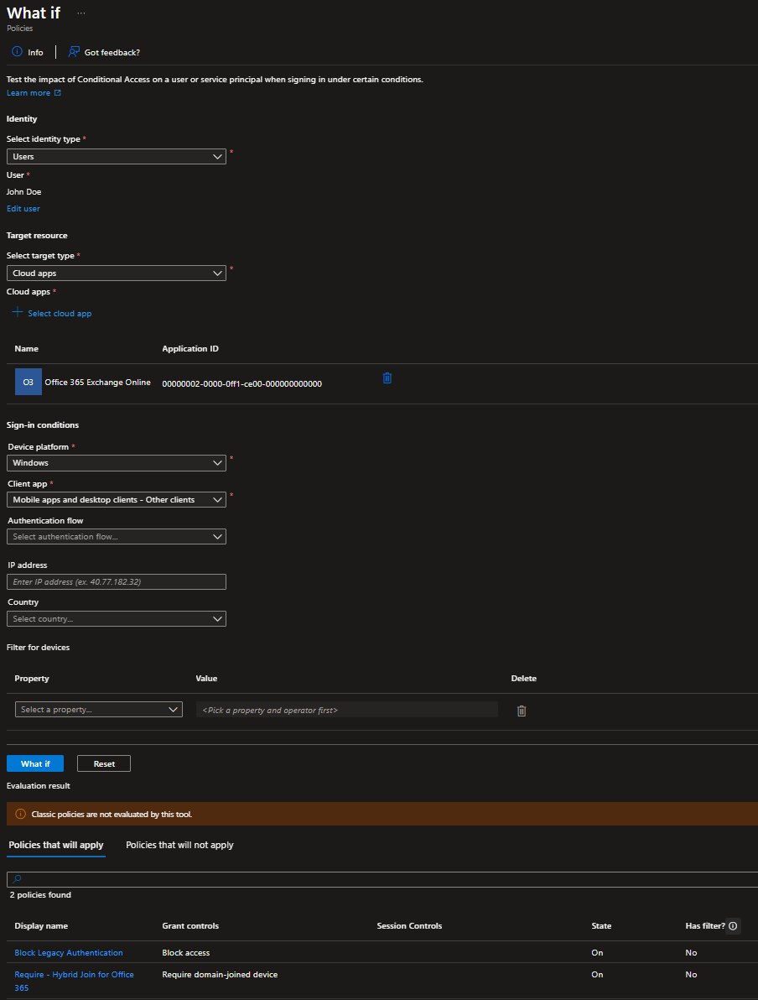
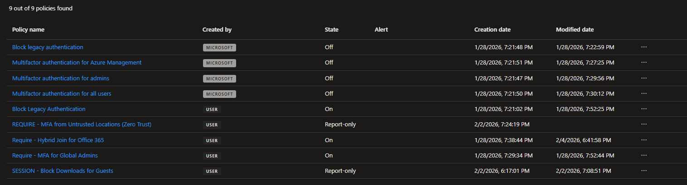

← Back to Portfolio
Project Overview
Designed and implemented three Conditional Access policies in Azure Entra ID to enforce modern security controls across the NigelTech.local hybrid environment. This project demonstrates understanding of policy-based access control, zero-trust principles, and the "What If" testing methodology for validating security policies before enforcement.
Technologies Used: Azure Entra ID (Premium P2), Conditional Access, Azure AD Sign-in Logs, "What If" Analysis Tool
Business Problem
Traditional perimeter-based security assumes everything inside the network is trusted. Modern threats require a zero-trust approach where every access request is verified based on user identity, device state, location, and risk level. Conditional Access policies enable organizations to enforce security requirements dynamically - blocking risky access attempts while allowing legitimate users seamless access to resources. This is critical for preventing credential theft, blocking legacy authentication exploits, and ensuring only compliant devices access corporate data.
Understanding Conditional Access
Policy Structure: IF-THEN Logic
Conditional Access policies follow an IF-THEN model:
- IF a user/device/location/risk condition is met
- THEN grant access with requirements, or block access completely
Policy Components
| Component |
Purpose |
Examples |
| Assignments |
WHO and WHEN |
Specific users, groups, directory roles, cloud apps |
| Conditions |
Context signals |
Sign-in risk, device platforms, locations, client apps |
| Access Controls |
WHAT happens |
Grant with MFA, block access, require compliant device |
Critical Evaluation Logic
Key Concept: ALL Conditional Access policies apply to every sign-in attempt - not just the first match like firewall rules. If ANY policy says "Block," access is denied. If multiple policies grant access but require different controls, the user must satisfy ALL requirements. This is fundamental to understanding CA behavior.
Lab Environment - NigelTech.local
- Azure Entra ID tenant with Premium P2 trial licensing
- Hybrid Azure AD joined Windows 11 workstation
- Test user accounts: jdoe (standard user), nigeladmin (admin account)
- Synchronized users from on-premises Active Directory
- Access to Azure Portal, Office 365, and sign-in logs
Implementation Steps
Phase 1: Access Conditional Access Blade
- Logged into Azure Portal (portal.azure.com)
- Navigated to Entra ID → Security → Conditional Access
- Reviewed existing policies (likely empty or baseline Microsoft-managed policies)
- Explored the "What If" tool - this became critical for testing policies safely
Phase 2: Create Policy 1 - Block Legacy Authentication
Purpose: Legacy authentication protocols (IMAP, POP3, SMTP, Exchange ActiveSync) don't support MFA and are commonly exploited in brute-force attacks. Blocking these protocols is a zero-trust best practice.
Policy: BLOCK - Legacy Authentication
Assignments:
- Users: All users
- Exclusions: nigeladmin (emergency access account to prevent lockout)
- Cloud apps: All cloud apps
Conditions:
- Client apps (Configure: Yes):
- ✅ Exchange ActiveSync clients
- ✅ Other clients (IMAP, POP, SMTP)
- ❌ Browser (unchecked)
- ❌ Mobile apps and desktop clients (unchecked)
Access Controls:
Enable Policy: Report-only (test mode before enforcement)
- Clicked "+ New policy" in Conditional Access
- Named policy: "BLOCK - Legacy Authentication"
- Configured assignments: All users, excluded nigeladmin
- Set cloud apps: All cloud apps
- Configured conditions: Client apps → Selected legacy protocols only
- Set access control: Block access
- Set policy mode: Report-only
- Clicked "Create"
Phase 3: Test Policy 1 with "What If" Tool
- Navigated to Conditional Access → What If
- Selected user: jdoe
- Selected cloud apps: Office 365
- Selected client app: "Other clients"
- Clicked "What If" button
- Result: Policy "BLOCK - Legacy Authentication" applied → Access would be blocked ✓
- Changed client app to "Browser" → Policy did NOT apply (correct behavior) ✓

"What If" analysis showing BLOCK - Legacy Authentication policy applies when using legacy client apps
Phase 4: Create Policy 2 - Require MFA for Global Admins
Purpose: Admin accounts are high-value targets. Requiring MFA for all Global Administrators adds defense-in-depth and is a zero-trust requirement.
Policy: REQUIRE - MFA for Global Admins
Assignments:
- Users: Directory roles → Global Administrator
- Cloud apps: All cloud apps
Conditions: None (applies to all sign-ins)
Access Controls:
- Grant: Grant access
- ✅ Require multifactor authentication
- For multiple controls: Require all the selected controls
Enable Policy: Report-only
- Created new policy: "REQUIRE - MFA for Global Admins"
- Assignments: Directory roles → Selected "Global Administrator"
- Cloud apps: All cloud apps
- Access controls: Grant access → Require multifactor authentication
- Enable policy: Report-only
- Created policy
Phase 5: Create Policy 3 - Require Hybrid Joined Device for Office 365
Purpose: Ensure only corporate-managed devices (hybrid Azure AD joined) can access Office 365 data. This prevents personal/unmanaged devices from accessing sensitive corporate information.
Policy: REQUIRE - Hybrid Join for Office 365
Assignments:
- Users: All users
- Cloud apps: Office 365 (selected from app list)
Conditions:
- Device platforms: Any device
Access Controls:
- Grant: Grant access
- ✅ Require Hybrid Azure AD joined device
Enable Policy: Report-only
- Created new policy: "REQUIRE - Hybrid Join for Office 365"
- Assignments: All users
- Cloud apps: Select apps → Searched "Office 365" → Selected it
- Conditions: Device platforms → Any device
- Access controls: Require Hybrid Azure AD joined device
- Enable policy: Report-only
- Created policy

Conditional Access policies dashboard showing three configured policies in Report-only mode
Phase 6: Validate Policy 3 with Real Sign-In
- Logged into Windows 11 client as NIGELTECH\jdoe
- Verified device hybrid join status:
dsregcmd /status
# Output confirmed:
# AzureAdJoined: YES
# DomainJoined: YES
- Opened browser and navigated to portal.office.com
- Signed in with jdoe credentials
- Access granted successfully (policy in Report-only mode doesn't enforce yet)
- Returned to Azure Portal → Entra ID → Sign-in logs
- Found jdoe's recent Office 365 sign-in
- Clicked on sign-in event → "Conditional Access" tab
- Verified: Policy "REQUIRE - Hybrid Join for Office 365" showed "Report-only" result
- Device compliance check: Success (device is hybrid joined)
Phase 7: Enable Policy 1 for Enforcement
Note: After testing in Report-only mode, switched one policy to enforcement to demonstrate real-world activation.
- Navigated to Conditional Access → Policies
- Clicked on "BLOCK - Legacy Authentication" policy
- Changed "Enable policy" from "Report-only" to "On"
- Clicked "Save"
- Policy is now actively enforcing - legacy authentication attempts will be blocked
Key Concepts Learned
Report-Only Mode: Safe Testing Strategy
Report-only mode is critical for validating policies before enforcement. In this mode:
- Policies are evaluated during every sign-in
- Results appear in sign-in logs
- NO enforcement occurs - users are never blocked
- Allows administrators to see impact before going live
This prevents accidental lockouts and allows data-driven policy tuning.
"What If" Tool: Pre-Deployment Validation
The "What If" tool simulates policy evaluation without requiring actual sign-ins. By specifying user, app, location, device platform, and client app, you can see which policies would apply and what the outcome would be. This is essential for:
- Validating policy logic before creating
- Troubleshooting unexpected blocks
- Understanding policy interaction
- Training and documentation
Policy Interaction and Cumulative Enforcement
Unlike firewall rules (first-match wins), ALL Conditional Access policies evaluate for every sign-in:
- If Policy A requires MFA and Policy B requires compliant device → User needs BOTH
- If any policy blocks access → Access denied, regardless of other policies granting
- Policies are additive in their requirements
Emergency Access Account Exclusions
Always exclude at least one admin account from blocking policies to prevent complete lockout. This "break glass" account should:
- Have a strong, unique password stored securely offline
- Be excluded from MFA requirements and blocking policies
- Be monitored closely for any usage
Key Learning: The difference between "Report-only" and "On" is critical. Report-only mode lets you validate policies with real sign-in data without risking user lockouts. Always test policies in Report-only first, review sign-in logs for 24-48 hours, then enable enforcement. The "What If" tool is your pre-deployment testing tool, while Report-only is your production validation phase.
Challenges & Solutions
Understanding Client App Filtering
Challenge: Initially confused about the difference between "Browser," "Mobile apps and desktop clients," and "Other clients" when configuring the legacy auth block.
Solution: Learned that:
- Browser: Modern web-based access (supports MFA)
- Mobile apps and desktop clients: Modern auth-capable native apps (Outlook mobile, Teams desktop)
- Other clients: Legacy protocols (IMAP, POP3, SMTP, basic auth) that DON'T support MFA
- Exchange ActiveSync: Mobile email protocol, can be legacy or modern depending on configuration
To block ONLY legacy auth, must check "Exchange ActiveSync clients" and "Other clients" while leaving modern options unchecked.
Policy Didn't Show in Sign-In Logs Initially
Issue: Created policies but didn't see them in sign-in logs immediately after user login.
Solution: Sign-in logs can have a 5-10 minute delay. Also learned that policies must be in "Report-only" or "On" state to appear in logs - if still in draft or disabled, they won't evaluate. Refreshed sign-in logs after waiting a few minutes and policies appeared correctly.
Understanding "Require All" vs "Require One"
Learning Point: When configuring grant controls with multiple requirements (like MFA + compliant device), there's an option "For multiple controls" with two choices:
- Require all the selected controls: User must satisfy ALL requirements (AND logic)
- Require one of the selected controls: User must satisfy ANY ONE requirement (OR logic)
For security policies, "Require all" is typically the correct choice. "Require one" is used when offering alternative authentication methods.
Key Takeaways
- Zero Trust Foundation: Conditional Access is the enforcement mechanism for zero-trust architecture. Every access request is verified based on signals, not assumed trust based on network location.
- Blocking Legacy Auth: This is one of the highest-impact security policies. Legacy protocols don't support MFA and are a primary attack vector for credential stuffing and brute force attacks.
- MFA for Admins: Admin accounts require additional protection. Even if standard users don't have MFA enforced, admins should always require it.
- Device Trust: Requiring hybrid Azure AD joined (or compliant) devices prevents personal/BYOD devices from accessing corporate data, enforcing corporate security policies.
- Testing Methodology: Always follow this sequence: "What If" tool → Report-only mode → Review sign-in logs → Enable enforcement. This prevents accidental lockouts.
- Policy Naming: Using prefixes like "BLOCK -" or "REQUIRE -" makes policies immediately understandable and helps with management at scale.
Real-World Application
This lab demonstrates capabilities directly applicable to enterprise IAM analyst roles:
- Designing policy-based access controls aligned with zero-trust principles
- Using "What If" analysis for pre-deployment policy validation
- Interpreting sign-in logs to validate policy effectiveness
- Understanding policy interaction and cumulative enforcement
- Implementing emergency access account exclusions to prevent lockout
- Balancing security requirements with user experience
- Documenting policy intent and configuration for audit purposes
Integration with Other IAM Components
Conditional Access policies work in conjunction with other identity services:
- Azure AD MFA: CA policies enforce MFA requirements; MFA provides the authentication method
- Hybrid Azure AD Join: CA policies can require device trust; hybrid join provides that trust signal
- Intune Compliance: CA policies can require compliant devices; Intune evaluates device compliance status
- Azure AD Identity Protection: CA policies can respond to sign-in risk and user risk signals detected by Identity Protection
- Privileged Identity Management (PIM): CA policies can require MFA for PIM role activation
← Back to Portfolio